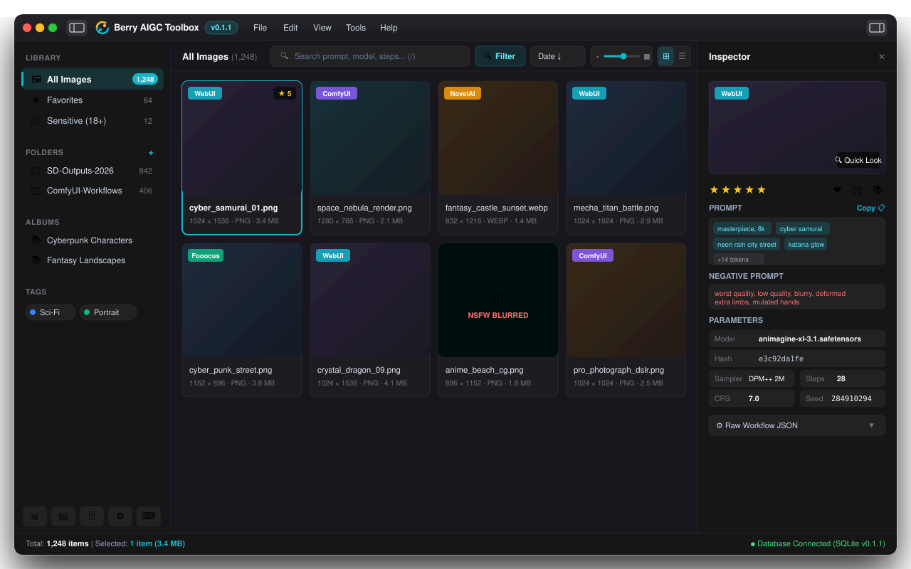

Eagle-Style Local AI Image & Workflow Asset Manager
High-performance, local-first asset manager with lossless metadata parsing for WebUI, ComfyUI, NovelAI & Fooocus. Instant 64x WebP thumbnail caching with zero cloud dependency.

Engineered for High-Frequency AI Creators
Every component is optimized for speed, precision, and privacy — from instantaneous virtual scrolling to deep ComfyUI node graph parsing.
Eagle-Style 3-Pane Studio
Collapsible left navigation tree, ultra-smooth virtual grid gallery with live zoom slider (130px~360px), and a dedicated inspector pane.
Lossless AIGC Metadata Parser
Extracts prompt, negative prompt, checkpoint model hash, sampler, CFG scale, steps, and full ComfyUI JSON workflow trees without data loss.
64x-Optimized WebP Cache
Lanczos3 downsampling tailored for AIGC aspect ratios (1024/1536/2048) with 2-thread background throttling and lazy on-demand decoding.
Smart Tags & Color Albums
Organize huge libraries with color-coded multi-tags, custom smart albums, 1~5 star ratings, and 1-click batch classification.
Prompt & Seed Reproduction
1-click token copy, prompt phrase breakdown, seed extraction, model hash resolution, and prompt statistical frequency analysis.
100% Local-First & Private
Embedded SQLite database, zero tracking, zero cloud dependencies. Works completely offline with automated backup and vacuum utilities.
Universal Support for Leading AIGC Ecosystems
Download Berry AIGC Toolbox
Select your platform below. All releases are digitally packaged and open-source on GitHub Releases.
Windows
Compatible with Windows 10 / 11 (64-bit).
macOS
Compatible with macOS 11.0 Big Sur or later.
Linux
Supports Ubuntu, Debian, Arch, Fedora and others.
🏗️ Clean-Slate Architecture
Modular multi-crate Rust architecture designed for zero memory leaks, sub-second SQLite queries, and crash-resilient metadata extraction.
⌨️ Efficiency Keyboard Shortcuts
Master your AIGC workflow with rapid single-key shortcuts without lifting your hands from the keyboard.
Frequently Asked Questions
Everything you need to know about Berry AIGC Toolbox.
Does Berry AIGC Toolbox upload any of my images or prompts to the cloud? ▼
No, absolutely not. Berry AIGC Toolbox is 100% local-first and offline. All metadata parsing, thumbnail generation, and database indexing are performed entirely on your local machine using SQLite.
Can I drag images directly from Berry into ComfyUI or WebUI? ▼
Yes! Native OS drag-and-drop is fully supported. You can drag any card directly from Berry into ComfyUI to load its entire workflow node graph, or into WebUI PNG Info to reconstruct generation parameters.
How does Berry handle huge folders with over 50,000+ AI images? ▼
Berry uses virtual row scrolling (only rendering cards currently visible on screen) and a throttled 2-thread Rayon background worker for WebP thumbnails. This ensures minimal RAM usage and zero interface stutter even with 100,000+ images.
Is Berry AIGC Toolbox free and open source? ▼
Yes! Berry AIGC Toolbox is licensed under the GNU Affero General Public License v3.0 (AGPL-3.0). It is free to use, modify, and contribute to.